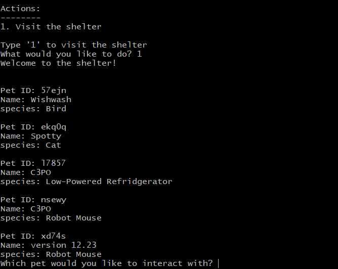
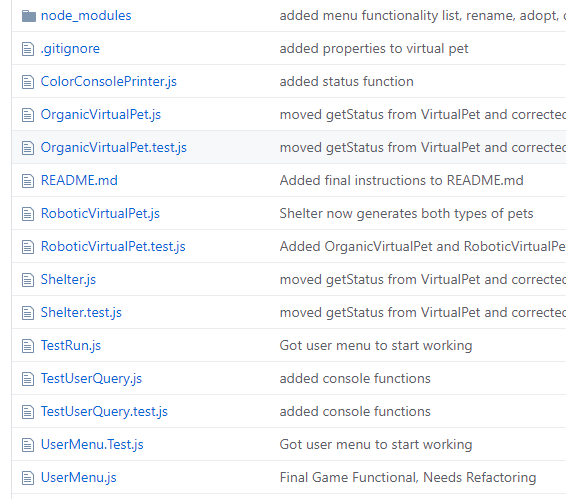
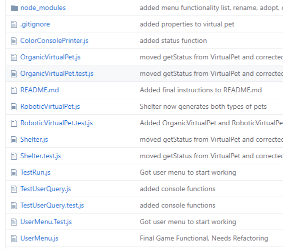

About Me
/Current Status
I am currently enrolled at We Can Code IT, a 14-week intense software development training bootcamp in Columbus, Ohio. Along with a moderate sized cohort, I've been tackling "real-world" projects in an agile environment using paired and mob programming. Sprints range 1-3 weeks.
/Background
Working service-industry jobs have been a large part of my adult life. As a bartender for the last 8 years, I have benefited from meeting many (many) kinds of interesting people. I hold extreme value to crafting the best product and entertaining guests in the most creative ways that I can.
It wasn't until I started taking on more responsibilities behind the scenes that I considered an exact path towards a career change. After I'd adopted the task of counting the bar inventory and managed a database, my interest had peaked. I wanted to know more.
This lead to independent studies including coding-practice websites, lecure videos, reading sources, and plenty of subreddit crawling. Joining We Can Code IT has vastly honed my skills as a coder.
I'm ready to craft new kinds of products.
Virtual Pet Shelter
Tasked with creating a virtual pet shelter game. The game begins by generating random projects in
in the shelter for the user. User checks up and maintains pets' health, thirst, happiness, and more. The game
featuers a "tick" method to give the player a "real-time" experience.

 

Generated pets for user
Pet interaction and upkeep
Tools: GitHub, NodeJS, Jest, Gitbash
High Street Hospital
Project 3